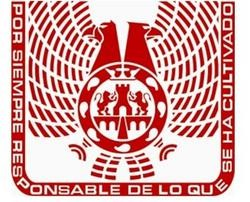

Kit gráfico UVM para el tablón
Todo lo que necesitas para armar un módulo nuevo con la misma apariencia: paleta derivada del logotipo institucional, tipografía, logotipos, componentes listos e iconos. La investigación completa está en docs/identidad-uvm.md.
1. Marca
Escudo
Águila (norte del continente) y cóndor (sur) sobre el emblema de la Ciudad de México, con el lema «Por siempre responsable de lo que se ha cultivado». Se usa en encabezados de documentos oficiales.

Wordmark UVM
Letras «UVM» en gris degradado con la línea roja y la leyenda Laureate International Universities. En fondos oscuros se usa invertido.

Logotipo completo (encabezado de formatos)
Tal como aparece en el formato de retroalimentación entregado por la docente.
2. Color
El rojo y los grises se muestrearon del escudo y del wordmark; los colores de enfoque provienen de las plantillas de cada presentación de clase.
Institucionales
Por enfoque (unidades de la materia)
Semánticos
3. Tipografía
Aplicaciones en Psicoterapia
Retroalimentación de simulación
Fortalezas observadas
Geométrica, cercana al trazo del wordmark UVM. Alternativa del sistema: Segoe UI / system-ui.
El síntoma es un signo de malestar; lo que Freud valora es la posibilidad de pasar del síntoma a un relato. Negrita para énfasis y cursiva para citas.
Texto secundario en gris 500 para descripciones y ayudas.
Etiqueta superior (eyebrow)4. Componentes
Botones y badges
Escala 0–5 y puntaje
Cita y callouts
“Estar en el campo de la neurosis es tener un saber hacer con la falta y el deseo.”Jacques Lacan
Línea de tiempo y tarjeta de módulo
- Unidad 1 · Psicoanálisis
- Unidad 2 · Humanista-existencial
- Unidad 3 · TCC
Título del módulo
Descripción breve de qué hace.
5. Iconos
Trazo de 1.8 px, 24×24, color heredado. Se insertan con UVM.icon('nombre').
6. Cómo armar un módulo nuevo
- Copia
plantillas/modulo-plantilla.htmla la carpeta de la materia y renómbralo (p. ej.caso-clinico.html). - Ajusta el hero (eyebrow, título, descripción) y el
currentde la barra superior. - Usa las tarjetas, escalas y paneles del kit; guarda estado con
UVM.store. - Si el módulo necesita contenido de la materia, léelo de
data.js(window.MATERIA). - Enlázalo en
materias/<materia>/index.html(listamods) y, si es de uso frecuente, en el tablón.
Esqueleto mínimo
<link rel="stylesheet" href="../../assets/css/uvm.css">
<header class="topbar"></header>
<main class="container">
<section class="hero"><div class="hero-card">
<div class="eyebrow">Módulo</div><h1>Título</h1>
<div class="hero-line"></div><p>Descripción</p>
</div></section>
<section class="section grid-2 sidebar">…</section>
</main>
<footer class="footer"></footer>
<script src="../../assets/js/uvm-core.js"></script>
<script src="data.js"></script>
<script>
UVM.renderTopbar({ root:'../../', current:'materia' });
UVM.renderFooter('../../');
</script>